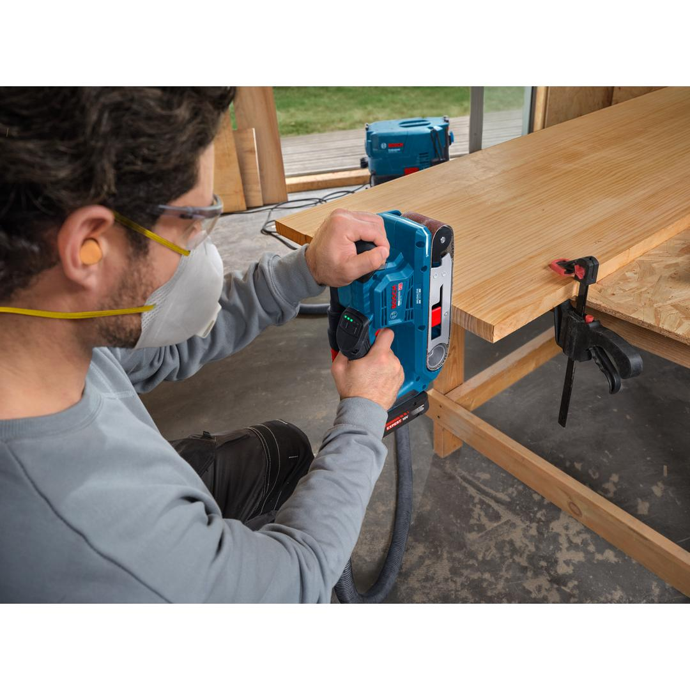
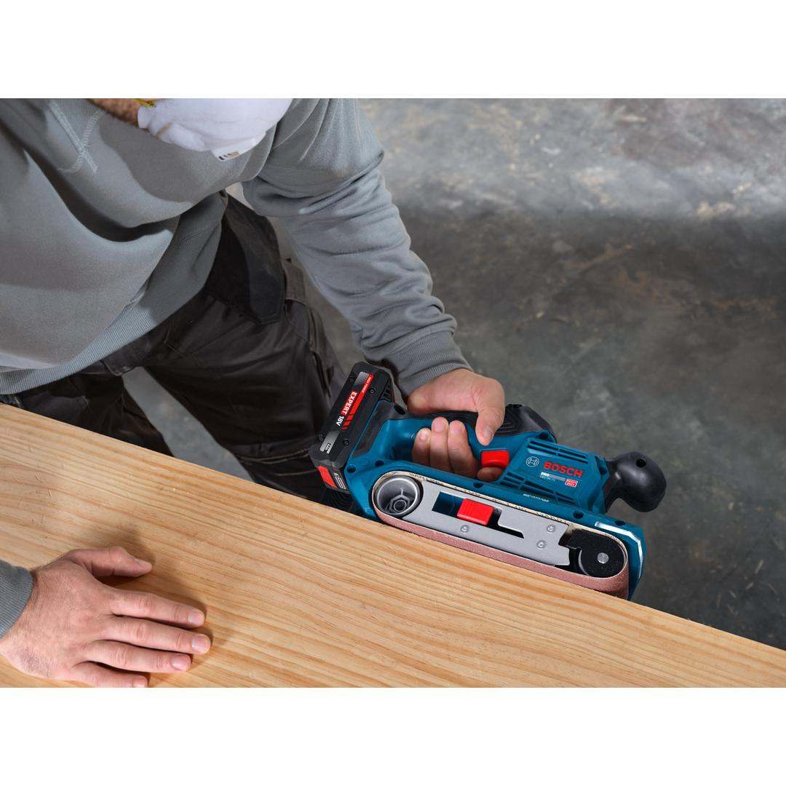
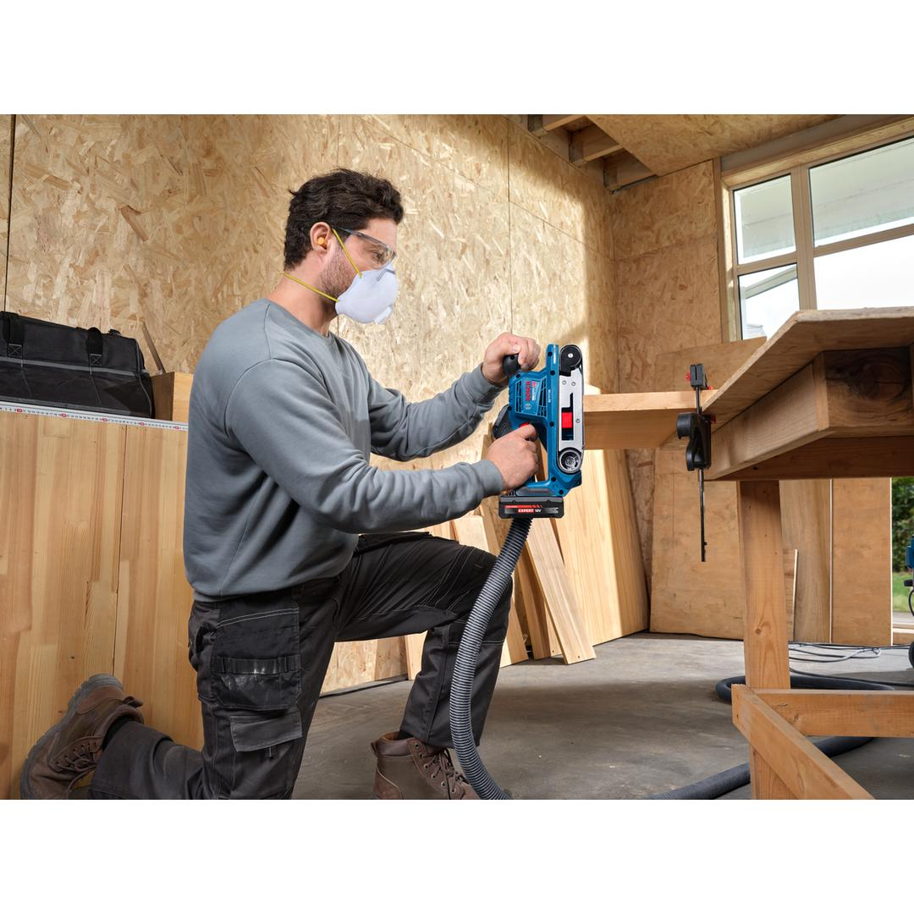
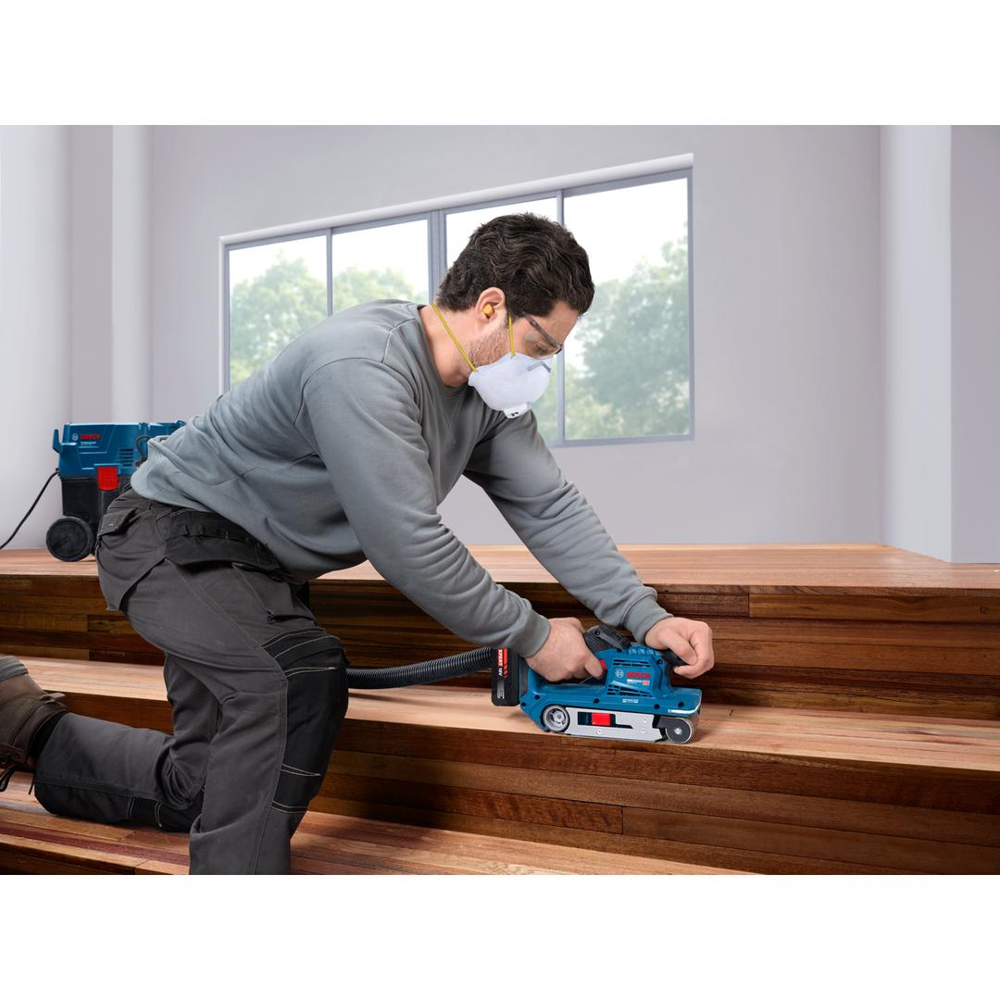
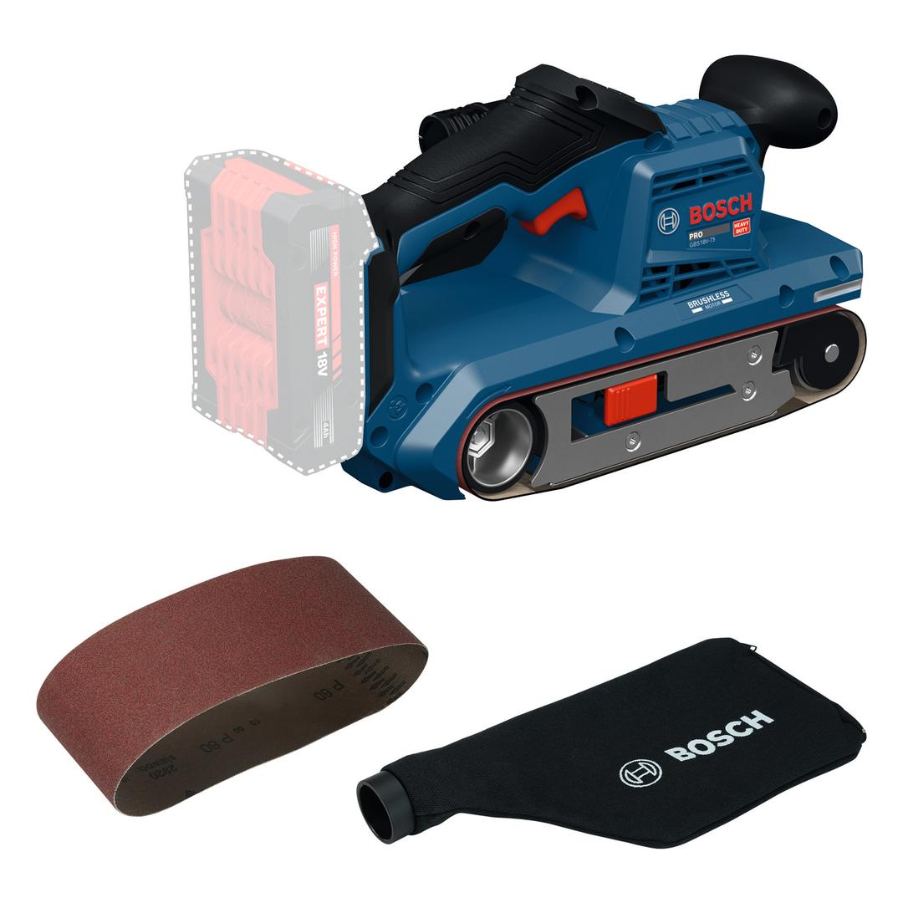

06012C2080








The PRO GBS18V-75 belt sander combines optimal control and powerful performance thanks to the high-power brushless motor. This compact, cordless sander is comfortable to handle with one or both hands due to its ergonomic, lightweight design. And it’s got your protection covered with smart features such as impact and drop protections.
| Sanding surface, width |
75 mm |
| Belt, length |
533 mm |
| Belt, width |
75 mm |
| Weight |
2.700 kg |
| Tool dimensions (width) |
140 mm |
| Tool dimensions (length) |
291 mm |
| Tool dimensions (height) |
180 mm |
| Belt speed |
200 – 320 m/min |
| Battery recommendation |
>=4.0Ah |
| Battery voltage, works with |
18.0 V |
| Battery type |
Lithium-Ion |
| Motor technology |
Brushless |
High removal with optimal control
The PRO GBS18V-75 is for sanding wood in multiple applications such as rough carpentry framing, roofing, installing cabinets and more.
This compact belt sander weighs in at only 2.7 kg. It comes with an LED light bar and latest-generation HMI design for speed setting and tool status. It has a durable dust bag for easy dust management and is compatible with the Bosch Click & Clean system.